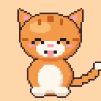

Meowchi: My Pixel Cat
Support
How do I take care of my cat?
Watch the needs at the top of the room: fullness, energy, happiness, cleanliness and health. Tap the care buttons to feed, wash, play with and look after your kitten. Needs go down slowly while you are away, but your cat never runs away and never dies, so there is no pressure.
How do I earn coins?
Care for your cat, play the mini-games, go for walks and check in every day. Spend coins in the shop on food, toys, outfits and decorations, then arrange them in Decorate.
Why can't I start a mini-game?
Mini-games use your cat's energy. Let your kitten rest or sleep for a while, then try again.
How do I add the widget?
Touch and hold the Home Screen, tap Edit → Add Widget, search for Meowchi and choose a size. The widget shows how your cat is doing.
How do I turn reminders on or off?
Open Menu → Settings → Gentle reminders. You can also manage notifications in iOS Settings → Notifications → Meowchi.
Will I lose my cat if I change phones?
Your game is saved on your device and included in your iCloud or computer backup. Restore that backup on your new device to keep your cat. Deleting the app deletes your game.
Contact
Write to us at mobile@othinks.com. Please include your device model and iOS version.
Destek
Kedime nasıl bakarım?
Odanın üstündeki ihtiyaçlara göz atın: tokluk, enerji, mutluluk, temizlik ve sağlık. Bakım düğmeleriyle kedinizi besleyin, yıkayın, onunla oynayın ve ilgilenin. Siz yokken ihtiyaçlar yavaşça azalır, ama kediniz asla kaçmaz ve ölmez; acele etmenize gerek yok.
Nasıl altın kazanırım?
Kedinize bakın, mini oyunları oynayın, yürüyüşe çıkın ve her gün uğrayın. Altınları mağazada yemek, oyuncak, kıyafet ve dekorasyona harcayın, sonra Dekorasyon bölümünde yerleştirin.
Mini oyunu neden başlatamıyorum?
Mini oyunlar kedinizin enerjisini kullanır. Kedinizin biraz dinlenmesine ya da uyumasına izin verin, sonra tekrar deneyin.
Widget'ı nasıl eklerim?
Ana ekrana basılı tutun, Düzenle → Widget Ekle'ye dokunun, Meowchi'yi arayın ve bir boyut seçin. Widget kedinizin durumunu gösterir.
Hatırlatmaları nasıl açıp kapatırım?
Menü → Ayarlar → Nazik hatırlatmalar bölümünü açın. Bildirimleri iOS Ayarlar → Bildirimler → Meowchi bölümünden de yönetebilirsiniz.
Telefon değiştirirsem kedimi kaybeder miyim?
Oyununuz cihazınızda saklanır ve iCloud ya da bilgisayar yedeğinize dahil olur. Kedinizi korumak için bu yedeği yeni cihazınıza geri yükleyin. Uygulamayı silmek oyununuzu da siler.
İletişim
Bize mobile@othinks.com adresinden yazın. Lütfen cihaz modelinizi ve iOS sürümünüzü belirtin.
Soporte
¿Cómo cuido de mi gato?
Fíjate en las necesidades de la parte superior de la habitación: saciedad, energía, felicidad, limpieza y salud. Usa los botones de cuidado para alimentar, bañar, jugar y atender a tu gatito. Las necesidades bajan poco a poco mientras no estás, pero tu gato nunca se escapa ni muere, así que no hay prisa.
¿Cómo gano monedas?
Cuida de tu gato, juega a los minijuegos, sal de paseo y entra cada día. Gasta las monedas en la tienda en comida, juguetes, ropa y decoración, y colócalos en Decorar.
¿Por qué no puedo empezar un minijuego?
Los minijuegos usan la energía de tu gato. Deja que descanse o duerma un rato y vuelve a intentarlo.
¿Cómo añado el widget?
Mantén pulsada la pantalla de inicio, toca Editar → Añadir widget, busca Meowchi y elige un tamaño. El widget muestra cómo está tu gato.
¿Cómo activo o desactivo los recordatorios?
Abre Menú → Ajustes → Recordatorios amables. También puedes gestionar las notificaciones en Ajustes → Notificaciones → Meowchi de iOS.
¿Perderé a mi gato si cambio de teléfono?
Tu partida se guarda en tu dispositivo y se incluye en tu copia de seguridad de iCloud o del ordenador. Restaura esa copia en el nuevo dispositivo para conservar a tu gato. Si eliminas la app, se borra tu partida.
Contacto
Escríbenos a mobile@othinks.com. Indica el modelo de tu dispositivo y la versión de iOS.
Support
Wie kümmere ich mich um meine Katze?
Achte auf die Bedürfnisse oben im Zimmer: Sättigung, Energie, Glück, Sauberkeit und Gesundheit. Mit den Pflege-Tasten fütterst, wäschst und bespielst du dein Kätzchen und kümmerst dich um es. Während du weg bist, sinken die Bedürfnisse langsam, aber deine Katze läuft nie weg und stirbt nie – ganz ohne Druck.
Wie verdiene ich Münzen?
Kümmere dich um deine Katze, spiele die Minispiele, geh spazieren und schau jeden Tag vorbei. Gib die Münzen im Shop für Futter, Spielzeug, Outfits und Dekorationen aus und richte alles unter Dekorieren ein.
Warum kann ich kein Minispiel starten?
Minispiele verbrauchen die Energie deiner Katze. Lass dein Kätzchen eine Weile ausruhen oder schlafen und versuche es dann erneut.
Wie füge ich das Widget hinzu?
Halte den Home-Bildschirm gedrückt, tippe auf Bearbeiten → Widget hinzufügen, suche nach Meowchi und wähle eine Größe. Das Widget zeigt, wie es deiner Katze geht.
Wie schalte ich Erinnerungen ein oder aus?
Öffne Menü → Einstellungen → Sanfte Erinnerungen. Mitteilungen kannst du auch in iOS unter Einstellungen → Mitteilungen → Meowchi verwalten.
Verliere ich meine Katze bei einem neuen Telefon?
Dein Spiel wird auf deinem Gerät gespeichert und ist Teil deines iCloud- oder Computer-Backups. Stelle dieses Backup auf dem neuen Gerät wieder her, um deine Katze zu behalten. Wenn du die App löschst, wird dein Spiel gelöscht.
Kontakt
Schreib uns an mobile@othinks.com. Bitte gib dein Gerätemodell und deine iOS-Version an.
サポート
ねこのお世話はどうするの？
部屋の上にある「おなか」「げんき」「しあわせ」「きれいさ」「けんこう」を見てみましょう。お世話ボタンで、ごはんをあげたり、洗ったり、遊んだりできます。留守のあいだは少しずつ下がりますが、ねこが家出したり死んでしまったりすることはありません。のんびり遊んでください。
コインはどうやって集めるの？
お世話、ミニゲーム、おさんぽ、毎日のログインでコインがもらえます。ショップでごはん、おもちゃ、服、インテリアを買って、もようがえで飾りましょう。
ミニゲームが始められないのはなぜ？
ミニゲームはねこの元気を使います。しばらく休ませたり眠らせたりしてから、もう一度試してください。
ウィジェットの追加方法は？
ホーム画面を長押しして編集 → ウィジェットを追加をタップし、Meowchiを検索してサイズを選びます。ウィジェットでねこの様子がわかります。
リマインダーのオン・オフは？
メニュー → 設定 → やさしいリマインダーを開いてください。iOSの設定 → 通知 → Meowchiでも管理できます。
機種変更するとねこはいなくなる？
ゲームは端末に保存され、iCloudまたはコンピュータのバックアップに含まれます。新しい端末でそのバックアップから復元すれば、ねこはそのままです。アプリを削除するとゲームも消えます。
お問い合わせ
mobile@othinks.com までご連絡ください。端末の機種とiOSのバージョンもお書きください。
고객 지원
고양이는 어떻게 돌보나요?
방 위쪽의 욕구를 확인하세요: 포만감, 에너지, 행복, 청결, 건강. 돌보기 버튼으로 밥을 주고, 씻기고, 놀아 주고, 보살펴 줄 수 있어요. 자리를 비운 동안 욕구가 천천히 줄어들지만, 고양이는 절대 도망가거나 죽지 않으니 부담 갖지 마세요.
코인은 어떻게 모으나요?
고양이를 돌보고, 미니게임을 하고, 산책을 가고, 매일 출석하세요. 상점에서 코인으로 밥, 장난감, 옷, 꾸미기 아이템을 사고 꾸미기에서 배치할 수 있어요.
미니게임을 시작할 수 없어요.
미니게임은 고양이의 에너지를 사용해요. 잠시 쉬거나 자게 한 뒤 다시 시도해 보세요.
위젯은 어떻게 추가하나요?
홈 화면을 길게 누르고 편집 → 위젯 추가를 탭한 뒤 Meowchi를 검색해 크기를 고르세요. 위젯에서 고양이의 상태를 볼 수 있어요.
알림은 어떻게 켜고 끄나요?
메뉴 → 설정 → 다정한 알림을 여세요. iOS의 설정 → 알림 → Meowchi에서도 관리할 수 있어요.
휴대폰을 바꾸면 고양이가 사라지나요?
게임은 기기에 저장되며 iCloud 또는 컴퓨터 백업에 포함됩니다. 새 기기에서 그 백업으로 복원하면 고양이를 그대로 만날 수 있어요. 앱을 삭제하면 게임도 삭제됩니다.
문의
mobile@othinks.com(으)로 연락해 주세요. 기기 모델과 iOS 버전을 함께 적어 주세요.
Assistance
Comment m'occuper de mon chat ?
Surveillez les besoins en haut de la pièce : satiété, énergie, bonheur, propreté et santé. Les boutons de soin permettent de nourrir, laver, faire jouer et soigner votre chaton. Les besoins baissent doucement pendant votre absence, mais votre chat ne s'enfuit jamais et ne meurt jamais : aucune pression.
Comment gagner des pièces ?
Prenez soin de votre chat, jouez aux mini-jeux, partez en promenade et revenez chaque jour. Dépensez vos pièces dans la boutique en nourriture, jouets, tenues et décorations, puis installez-les dans Décorer.
Pourquoi je ne peux pas lancer un mini-jeu ?
Les mini-jeux utilisent l'énergie de votre chat. Laissez votre chaton se reposer ou dormir un peu, puis réessayez.
Comment ajouter le widget ?
Touchez longuement l'écran d'accueil, touchez Modifier → Ajouter un widget, cherchez Meowchi et choisissez une taille. Le widget montre comment va votre chat.
Comment activer ou désactiver les rappels ?
Ouvrez Menu → Réglages → Rappels tout doux. Vous pouvez aussi gérer les notifications dans Réglages → Notifications → Meowchi d'iOS.
Vais-je perdre mon chat si je change de téléphone ?
Votre partie est enregistrée sur votre appareil et incluse dans votre sauvegarde iCloud ou ordinateur. Restaurez cette sauvegarde sur le nouvel appareil pour garder votre chat. Supprimer l'app supprime votre partie.
Contact
Écrivez-nous à mobile@othinks.com. Merci d'indiquer le modèle de votre appareil et votre version d'iOS.